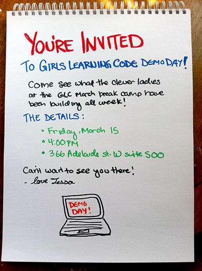

Making Internet with HTML and CSS (Part 2)
You're Invited...
How do we make it into "The Internet"?
The browser

The browser is there to be bossed around
But the browser isn't a smart human like you

- The browser can't use its eyes and brain to figure out how to display this document, so we have to tell it exactly what to do
- We can tell the browser what to do by using a special language called HTML
- HTML uses things called tags to tell the browser where each element starts and ends
Be Bossy but also Specific
HTML Tags
Here's a really simple web page:


This line of HTML code tells the browser that the words inside the two tags are a paragraph
The combination of an opening tag, a closing tag, and the content between them makes up what we call an element
Elements are the building-blocks of web pages
There are lots of different kinds of elements, some tell the browser about text elements like paragraphs, lists and headings.
Other elements are for different parts of web pages, like links and images
Hyper-links
Links are one of the most important parts of the internet
A link element is called an anchor in HTML, and the tag is just an a
<a href="http://google.com">Google</a>Images
Images are like hyperlinks because they also use an attribute to tell the browser a web address
<img src="http://ladieslearningcode.com/wp-content/uploads/2013/02/IMG_3800.jpg" />Instead of an href attribute, an image has a src attribute, which tells the browser the source of the image
Let's take what we've learned about HTML and build an invitation to our Demo Day using Love Bomb
Demo Day Info
- Friday, March 15
- 3:30PM-5:00PM
- 366 Adelaide St. W, Suite 500
Styling with CSS
You can make plain-looking documents like Wikipedia using only HTML
But if you want to make something more fancy-looking, you need to do CSS to tell the browser what the elements should look like
- Use HTML to tell the browser what kind of content is in your document
- Use CSS to tell the browser what your content looks like
- The HTML is like the script: it tells the actors what to say and what order to say it in. If you only have HTML, your audience will understand the story, but it might not be a very interesting play
- CSS is like the direction, costumes, lighting, and sets in the play. It's telling the actors how to say their lines, where they should be standing when they do it, what they should wear, and what the background looks like.
Building a webpage is like creating a play
Writing CSS is like writing rules
CSS is also about Being Bossy
A CSS rule looks like this:
p {
color: red;
}
Each CSS rule is made up of a selector and one or more properties
A property is the name of the thing you want to control. Each property has a value that you can change.
In this example, p is the selector, color is the property, and red is the value.